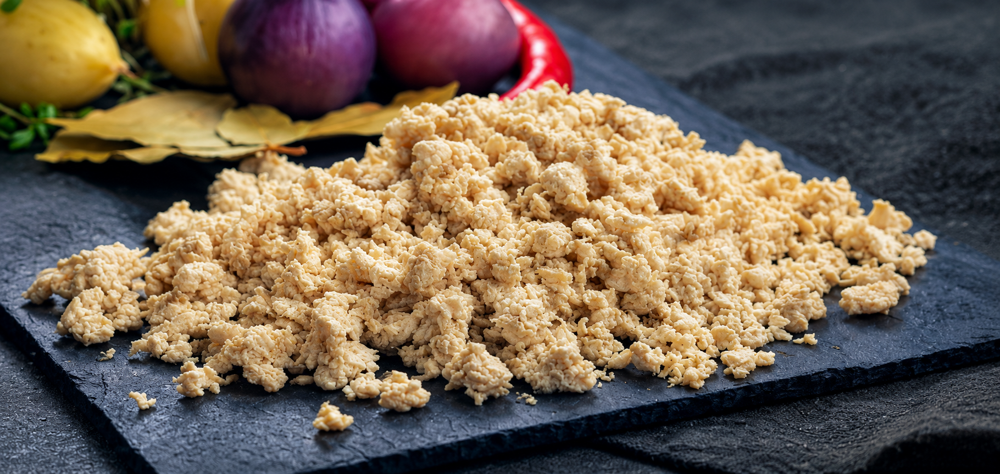
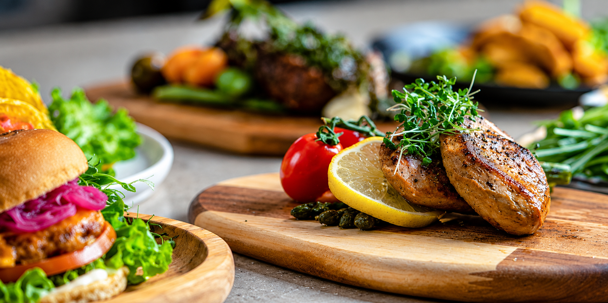
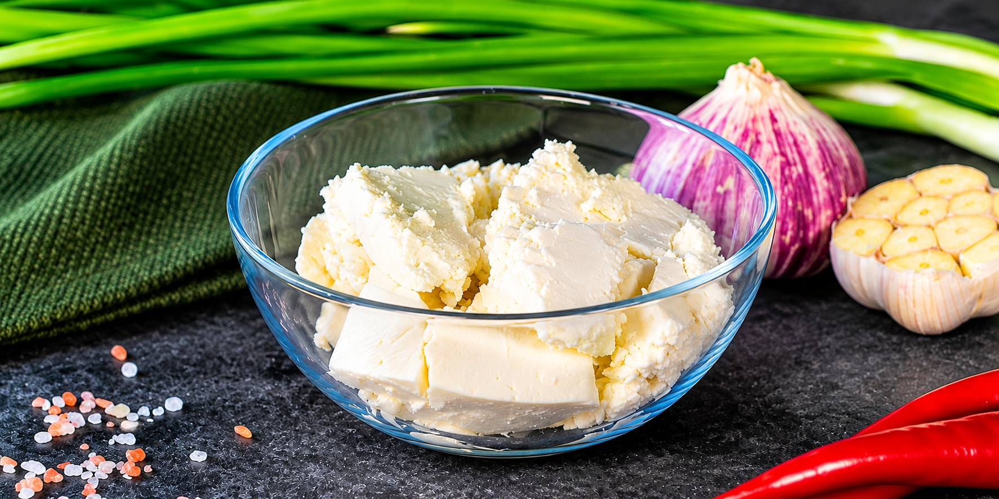
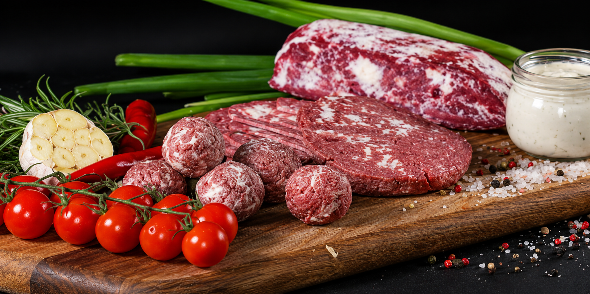
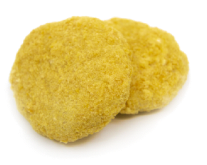
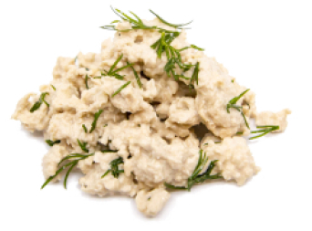
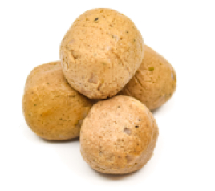
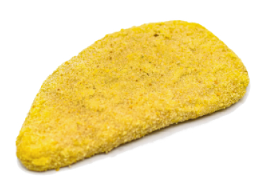

PROMYC® AS AN INDUSTRIAL INGREDIANT
Promyc® is a vegan mycoprotein ingredient produced through biotechnology with the fermentation process as a core. Our production process allows us to be a lot more efficient than traditional farming in terms of time, cost and feedstock, with much less environmental impact. It also enables the decentralization of food production, making it possible to produce Promyc® wherever needed.

PROMYC 1.0
Promyc® is in fact quite a boring ingredient - neutral colour, taste, and smell. But boring doesn't necessarily mean a bad thing. Besides being neutral in colour, taste, and smell, Promyc is a sustainable mycoprotein ingredient that can be used to produce vegan food products and that brings a great source of fibre and protein, nutrition, and healthy vitamins while offering a great texture.
High Nutritional value
"No compromises" means a tasty experience without hurting you, the environment, or anything else really. Great meals come with proper balanced nutrition, which helps you get full of energy.
Low-Fat
Less than 2%
Source Of Fiber
More than 3%
Source Of Protein
Contains all essential amino acids
Sugar-free
Less than 0.5%
What Can You Make with Promyc®?
Thanks to the features that Promyc® entails, it results in a versatile ingredient. It can be used in various kinds of food applications with different tastes and flavours to meet growing consumer demand for alternative vegan protein sources.

The Advantages of Working with Promyc®
Produce high-quality protein anytime, anywhere.
Scale Capacity
24h production cycle, growing protein at extreme speed
Local Production
Complete, simple production setup design for any manufacturers
Cost-efficient
Source, cost, logistics ... Economic choice in every way
Vegan
Safe, nutritious, tasty, and certified
Sustainable
Significantly reduces land and water use compared with traditional protein sources
Resource-efficient
Unique upcycle technology allows you to find the maximum potential from food
PROMYC FAT
The Promyc fat consists of a fungi-stabilized emulsion gel where the fat achieves a behaviour very similar to structured meat fat in both melting ability and taste aspects.
You can use the Promyc fat in a wide range of products. It obtains a controlled fat release and can therefore attain a prolonged mouthfeel in taste and richness - resulting in juicier plant-based products.

The Advantages of Working with Promyc Fat
Produce high-quality protein anytime, anywhere.
Fat-like Properties
Melts like animal fat tissue
Locally Sourced
Made from locally sourced ingredients
Sustainable
Can replace coconut oil 1:1

What Can You Make with Promyc Fat?
Promyc fat can be used in many different products. From burgers and meatballs to achieve a marbled structure, to emulsified products such as sausages or high moisture extruded meat-like structures. It is also possible to use it in 3D printing, creating marbled whole cut. Basically, all type of animal meat analogues can be achieved.
PROMYC® AS A SEMI-FINISHED PRODUCT
Besides a sustainable ingredient, Promyc® also comes in a wide range of delicious ready-to-cook products. Nuggets, Crispy Burger, Vego Balls, and Schnitzel - all made from Promyc® with the ability to offer ready-to-cook products to finally - be ready to eat.

Crispy Burger
A true favourite! With its firm texture and its juiciness, the crispy burger is your ultimate vegan and gluten-free option for breaded chicken. Since optimally prepared directly from the freezer, your sustainable comfort food is just minutes away!

Tôna Flakes
Our Tôna flakes have a fishy and fibrous texture, perfect for salads, creamy toppings or simply serve as it is. We strongly recommend trying it out as a layer in your Smörgåstårta - we have tried it, and it’s delicious!

Nuggets
Delicious golden nuggets, coated in crispy gluten free breading and with a chewy bite like that of chicken. Convinced you would pass a blind test? Find out by trying them!

Vego Balls
Savoury Promyc® balls, seasoned with allspice and nutmeg to offer you the vegan version of the Swedish "Husmanskost". Best served with potatoes, cream sauce, and lingonberries.

Schnitzel
With a bite and the taste of a classic veal schnitzel, our sustainable Promyc-based option is covered in gluten-free breading and is suitable for vegans. Whether you want to serve it with classic toppings, like capers and lemon, or slice it up Japanese katsu style is entirely up to you.
DO YOU WANT TO WORK WITH THE FUTURE OF FOOD?
Are you a restaurant, food producer, or store owner interested in including Promyc® in your assortment?
Then you should join our journey towards a more sustainable, innovative and tasty future.